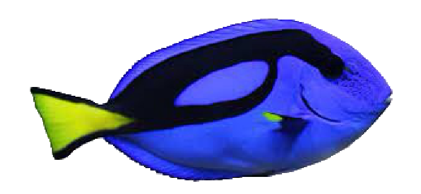

Blue Hippo Tang Fish

Common Name: Blue Hippo Tang
Scientific Name: Paracanthurus hepatus
Adult Size: 12 inches
Habitat: Indo-Pacific
Behavior: Semi-aggressive
Lifespan: 5 years
Diet: Herbivore
Reproduction: External fertilization and scatter eggs
Cool Facts: Dory from finding Nemo!
Other Names: Regal Tang